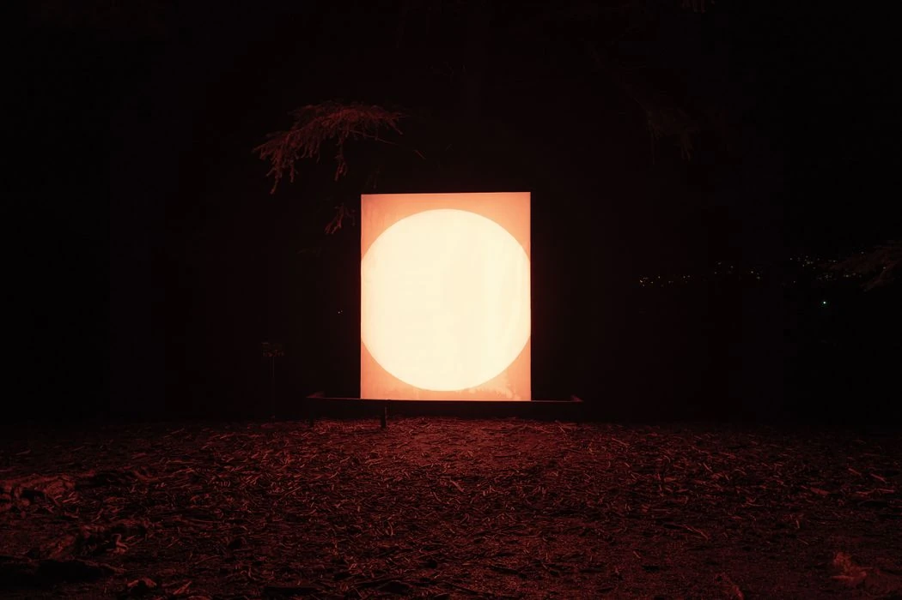

CADILLAC长沙创意外展
CADILLAC / 2025
AUTOMOTIVE
EXHIBITION SPACE
3D VISUALIZATION
AUTOMOTIVE
EXHIBITION SPACE
3D VISUALIZATION
CHANGSHA CREATIVE EXHIBITION创意外展 · 三维视觉
一座展台的两面
咖啡侧用蓝光、招牌和吧台呈现城市一面；户外侧用暖橙色灯面、岩壁和皮划艇呈现另一种看车场景。两面围绕同一个展台展开。
从正反面读到整体
反向视角给出另一张展台立面，顶视图让两面陈列和中间体量的关系一眼可见。
从车头看两个展示面
咖啡侧的吧台横向铺开，展车停在招牌与座席之间。户外侧把圆形灯面立在橙色车后，从双车正面能同时读出两套轮廓。

照片让亮圆在暗场里成为可远看的标记。展陈成片把发光圆面放在车后，利用亮暗反差勾出前景车身。
kari Kittlaus · Pexels 许可PROJECT
CADILLAC 长沙创意外展
BRAND / YEAR
CADILLAC / 2025
CATEGORY
AUTOMOTIVE
EXHIBITION SPACE
3D VISUALIZATION
EXHIBITION SPACE
3D VISUALIZATION